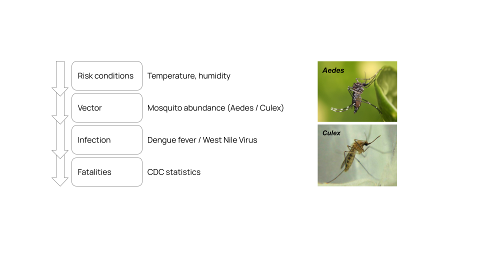

Introduction
Hello!
Flowchart
- Risk conditions National Oceanic and Atmospheric Administration, National Centers for Environmental Information, Climate Data Online (CDO), provides free access to NCDC's archive of global historical weather and climate data in addition to station history information. These data include quality controlled daily, monthly, seasonal, and yearly measurements of temperature, precipitation, wind, and degree days as well as radar data and 30-year Climate Normals. Customers can also order most of these data as certified hard copies for legal use.
Thermal biology to forecast pathogen transmission dynamics
Predict spatial and temporal spread of vector borne pathogen transmission
The two most important abiotic factors of disease are temperature and water availability, which determine the abundance and distribution of arthropod vectors [Brown 2023]. Evidence suggests desiccation contributes to the decline of mosquito-borne pathogen transmission at warmer temperatures.
There is a range of temperatures where mosquitos achieve high transmission potential. Forecast
The Aedes species of mosquito requires
- 8 months of drying out
References
- Brown, Joel J., Mercedes Pascual, Michael C. Wimberly, Leah R. Johnson, and Courtney C. Murdock. "Humidity–The overlooked variable in the thermal biology of mosquito‐borne disease." Ecology letters 26, no. 7 (2023): 1029-1049. https://doi.org/10.1111/ele.14228
- CDC Dengue Historic Data (2010-2023) https://www.cdc.gov/dengue/data-research/facts-stats/historic-data.html
- CDC West Nile Virus Historic Data (1999-2023) https://www.cdc.gov/west-nile-virus/data-maps/historic-data.html
